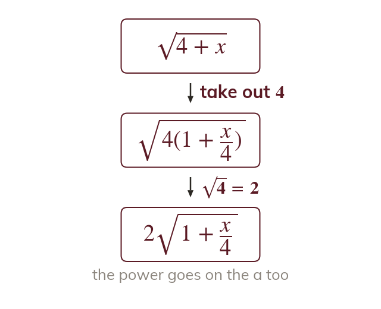
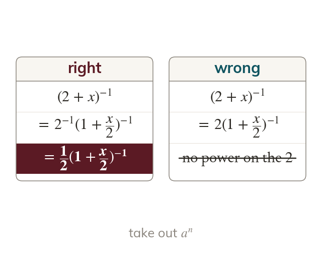
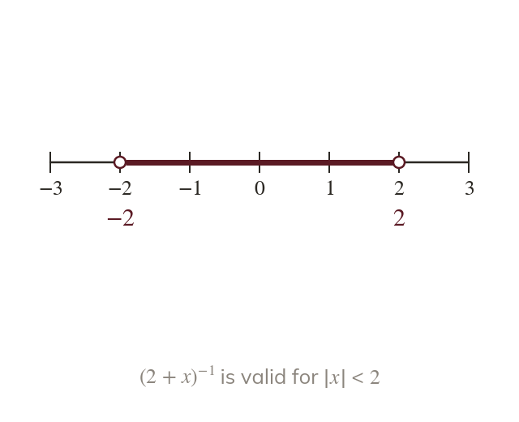
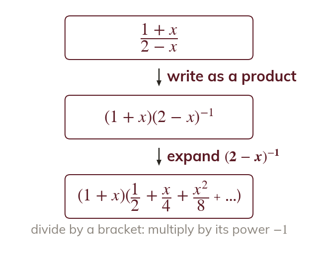
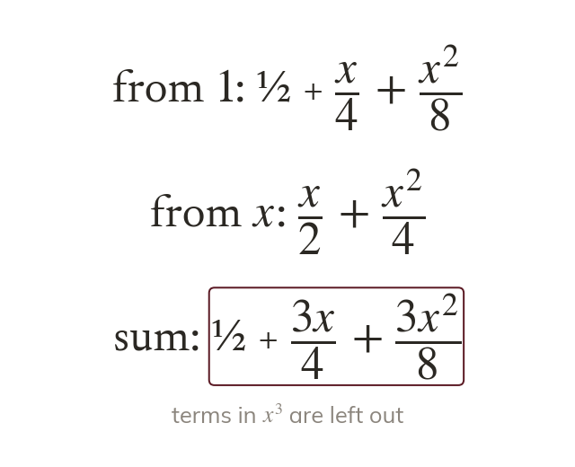
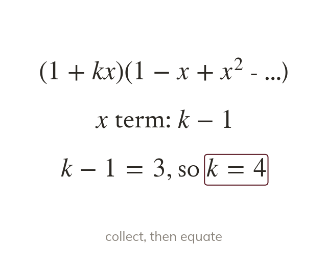

Make the
The formula needs in the bracket, so take out the factor writing + bx/a). The power applies to the a as well, so + bx)ⁿ = + bx/a)ⁿ.
Most binomial expansions on the paper have a bracket that does not start with such as Taking out turns + bx)ⁿ into expansion; multiplying by a polynomial then expands products and quotients, which extends to partial fractions.
Work down the page at your own pace. Write every answer in your book first, then click to check it.
Read each card, then follow the worked examples one step at a time.

The formula needs in the bracket, so take out the factor writing + bx/a). The power applies to the a as well, so + bx)ⁿ = + bx/a)ⁿ.

Every term of the bracket's expansion is multiplied by Writing a instead of is the commonest slip.

The expansion of + bx/a)ⁿ is valid for so For that is or
Pick an answer. If it's wrong, the feedback tells you which mistake it was.
Write the blanks in your book first, then tap each one to check.
Read each card, then follow the worked examples one step at a time.

Dividing by a bracket is multiplying by its power so
Expand first, then multiply by

Multiply term by term and collect like terms, keeping powers up to the one asked for. Each power comes from more than one pair of terms.

When the product holds an unknown, write each coefficient in terms of it and set it equal to the given value. One equation per unknown.
Pick an answer. If it's wrong, the feedback tells you which mistake it was.
Write the blanks in your book first, then tap each one to check.
Finished? Next lesson: 13.P4.3 Using Partial Fractions.
For each skill, tap the one that is true for you today. Your Revise pages start with anything you mark Not yet.
Your ratings are saved on this device only.
Log in, then search for a code to practise that skill.